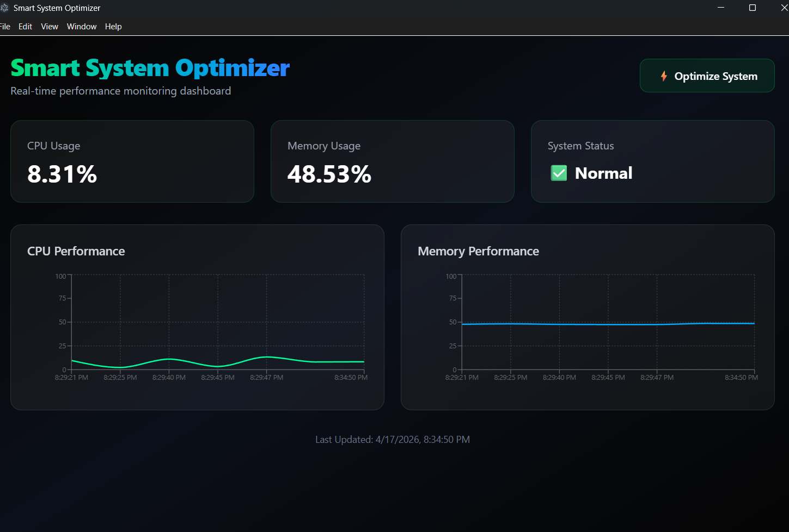

A modern real-time monitoring and optimization system built to analyze CPU usage, Memory performance, and provide intelligent optimization suggestions for better system efficiency.

To monitor system resources in real-time and provide optimization recommendations for improving overall system performance.
React.js, Tailwind CSS, Spring Boot, Java, REST API, Maven, SQLite/MySQL, and system performance analytics.
Live CPU & RAM monitoring, performance charts, optimization engine, smart suggestion popup, and clean professional dashboard UI.
Smart System Optimizer is designed to help users monitor and improve their computer performance efficiently. It collects system metrics, displays them visually using interactive charts, and provides AI-based optimization suggestions for better speed and resource management.
Aniruddh Kumar
Full Stack Developer | Java Developer | React Enthusiast
(Click here to Download the full Setup)